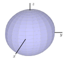
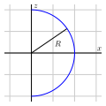
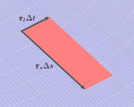
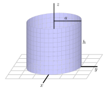

A parameterization of a curve in space is a vector-valued function \(\vr(t) = \lrangle{x(t),y(t),z(t)}\text{.}\) The curve itself is the set of points traced out by \(\vr(t)\) as the parameter ranges over some domain. It’s helpful to think of in terms of motion: the curve is the path an object takes, while a parameterization of the curve is way an object traverses the path.
This was helpful in describing lines. From the point of view of linear algebra, a line is 1D (affine) subspace of the vector space \(\R^3\text{.}\) In other words, it’s the solution set of a system of two linear equations in three variables. Such a description can be quite cumbersome to work with, so we use paramterizations such as \(\vr(t) = \vr_0 + t \vv\text{.}\) Each part of this parameterization has a geometric interpretation: \(\vr_0\) is some point the line goes through and \(\vv\) is a direction vector for the line.
It was also helpful to describe curves using a parameterization. For example, a circle of radius 1 in the \(xy\)-plane is the set of points that solve \(x^2 + y^2 = 1\text{.}\) But this is not the graph of a function, so compute the arc length, for example, potentially requires multiple integrals. The same is true of any geometric quantity such as curvature or torsion. Instead, it’s usually easier to work with a parameterization such as \(\vr(t) = \lrangle{\cos t, \sin t, 0}\text{.}\)
The same is true of surfaces. We want to be able to parametrize a surface in a way that makes it easy to compute the quantities we are interested in. Some surfaces, such as planes, are the graphs of functions of two variables, but many other surfaces, such as cylinders, spheres, and tori, are not. In this section, we will show how to parameterize some surfaces and how to compute their surface area using a parameterization.
A curve is a one-dimensional object, so a parameterization requires one parameter. A surface is a two-dimensional object, so a parameterization requires two parameters. A vector-valued function \(\vr(s,t)\) of two independent parameters \(s\) and \(t\) is a parameterization of a surface \(S\) if \(S\) consists of the terminal points of all vectors of the form
where \(x = x(s,t)\text{,}\)\(y = y(s,t)\text{,}\) and \(z = z(s,t)\) are functions of two variables. These are called the parametric equations for the surface.
\(\vr(-2, 3\pi/4)\) corresponds to which point on \(S\text{?}\)
(b)
What parameter values \((s,t)\) corresponds to the point \((0,-1,3)\) on \(S\text{?}\)
(c)
What is the best description of the surface \(S\text{?}\)
Activity3.3.2.
In this activity, we seek a parametrization of the sphere of radius \(R\) centered at the origin, as shown on the left in Figure 3.3.1. Notice that this sphere may be obtained by revolving a half-circle contained in the \(xz\)-plane about the \(z\)-axis, as shown on the right.


Figure3.3.1.A sphere obtained by revolving a half-circle.
Begin by writing a parametrization of this half-circle using the parameter \(s\text{:}\)
Be sure to state the domain of the parameter \(s\text{.}\)
By revolving the points on this half-circle about the \(z\)-axis, obtain a parametrization \(\vr(s,t)\) of the points on the sphere of radius \(R\text{.}\) Be sure to include the domain of both parameters \(s\) and \(t\text{.}\) (Hint: What is the radius of the circle obtained when revolving a point on the half-circle around the \(z\) axis?)
Draw the surface defined by your parameterization with appropriate technology.
Activity3.3.3.
In this activity you will parameterize the surface of donut, which is known as a torus.
(a)
Using \(s\) as the parameter, parameterize the circle of radius \(a\) centered at \((b,0,0)\) in the \(xz\)-plane.
(b)
Note that
\begin{equation*}
P = \lrpar{b-a, 0, 0} \qquad Q = \lrpar{b- \frac{\sqrt{2}}{2} a, 0, \frac{\sqrt{2}}{2}a} \qquad \text{and} \qquad R = \lrpar{b, 0, a}
\end{equation*}
are all points on the circle in part (a). Using \(t\) as the parameter, parameterize the circle through each of these points that is parallel to the \(xy\)-plane and has center on the \(z\)-axis. In other words, rotate each point around the \(z\)-axis and parameterize the circle that it traces out. You will have three different parameterized curves.
(c)
Now let \((x(s),0,z(s))\) be any point on the circle in part (a). Using \(t\) as the parameter, parameterize the circle obtained by rotating this point around the \(z\)-axis.
(d)
Combine your results to give a parameterization of the torus.
(e)
What range of values for \(s\) and \(t\) ensure that each point is described once?
Parameterization of the Graph of a Function.
A quick way to parameterize the graph of a function \(f(x,y)\) is to use \(x\) and \(y\) as the parameters.
Find a parameterization of the graph of the function \(f(x,y) = x^2y + 3\text{.}\)
Just as the area element for double integrals in \(\R^2\) depends on the coordinate system, the area element for surfaces in \(\R^3\) depends on the parameterization. Consider a parameterization \(\vr(s,t)\) of a surface \(S\) defined for \(a \leq s \leq b\) and \(c \leq t \leq d\text{.}\) As usual, we divide \([a,b]\) into \(m\) equal subintevals each of length \(\Delta s = \frac{b - a}{m}\) and endpoints \(a = s_0 \lt s_1 \lt s_2 \lt \cdots \lt s_m = b\text{.}\) And we divide \([c,d]\) into \(n\) equal subintevals each of length \(\Delta t = \frac{d - c}{n}\) and endpoints \(c = t_0 \lt t_1 \lt t_2 \lt \cdots \lt t_n = d\text{.}\) Each subrectanlge will have area \(\Delta A = \Delta s \Delta t\text{.}\)
The subrectangles \([s_{i-1},t_{j-1}] \times [s_i, t_j]\) all have area \(\Delta s \Delta t\text{.}\) However, the parameterization \(\vr(s,t)\) may stretch or shrink these subrectangles. The distortion is measured by the derivatives. If we hold \(t\) constant, then \(\vr(s,t)\) becomes a parameterized curve in the surface. The tangent vector to this curve
will be tangent to the surface. Similarly, if we hold \(s\) constant, then \(\vr(s,t)\) becomes a parameterized curve in the surface and the tangent vector
will be tangent to the surface. These two vectors span the tangent plane to the surface.
If we zoom into the surface at a point enough, it will begin to look like its tangent plane. Using the tangent plane approximation, if we increase \(s\) by a small amount \(\Delta s\text{,}\) then \(\vr\) changes by approximately \(\vr_s \Delta s\text{.}\) Similarly, if we increase \(t\) by a small amount \(\Delta t\text{,}\) then \(\vr\) changes by approximately \(\vr_t \Delta t\text{.}\) The rectangle \(R_{ij} = [s_{i-1},t_{j-1}] \times [s_i, t_j]\text{,}\) which has area \(\Delta s \Delta t\) is transform by \(\vr\) into approximately the parallelogram \(S_{ij}\) spanned by \(\vr_s \Delta s\) and \(\vr_t \Delta t\text{.}\)

Figure3.3.2.Approximation surface area with a parallelogram.
From vector geometry, we know that the area of a parallelogram spanned by two vectors is the magnitude of their cross product. So, we get that
\begin{equation*}
\Delta S = | (\vr_s \Delta s) \times (\vr_t \Delta t) | = | \vr_s \times \vr_t | \Delta s \Delta t = | \vr_s \times \vr_t | \Delta A.
\end{equation*}
where the second equality comes from the fact that \(\Delta s\) and \(\Delta t\) are positive scalars, which, by the properties of the cross product and magnitude, can be moved outside. This equation is saying that to approximate the amount of area on the surface \(\Delta S\) that corresponds to a small rectangle of area \(\Delta A\) in the parameter space you should scale it by \(| \vr_s \times \vr_t |\text{.}\)
This approximate will improve as the number of subrectangles increases. We take the limit \(m,m \to \infty\) as the number of rectangles goes to infinity to get area element for the surface:
To find the surface area of \(\vr(s,t)\text{,}\) defined on a domain \(D\text{,}\) we integrate the function \(f(x,y,z) = 1\) against this area element over the parameter domain
Let \(\vr(s,t) = \langle x(s,t), y(s,t), z(s,t) \rangle\) be a parameterization of a smooth surface over a domain \(D\text{.}\) The area of the surface defined by \(\vr\) on \(D\) is given by
for \(0 \leq s \leq 2\pi\) and \(0 \leq t \leq h\text{,}\) as shown in Figure 3.3.3.

Figure3.3.3.A cylinder.
Set up an iterated integral to determine the surface area of this cylinder.
Evaluate the iterated integral.
Recall that one way to think about the surface area of a cylinder is to cut the cylinder horizontally and find the perimeter of the resulting cross sectional circle, then multiply by the height. Calculate the surface area of the given cylinder using this alternate approach, and compare your work in (b).
As we noted earlier, we can take any surface \(z = f(x,y)\) and generate a corresponding parameterization for the surface by writing \(\langle s, t, f(s,t) \rangle\text{.}\) Hence, we can use our recent work with parametrically defined surfaces to find the surface area that is generated by a function \(f = f(x,y)\) over a given domain.
Activity3.3.6.
Let \(z = f(x,y)\) define a smooth surface, and consider the corresponding parameterization \(\vr(s,t) = \langle s, t, f(s,t) \rangle\text{.}\)
Let \(D\) be a region in the domain of \(f\text{.}\) Using Equation (3.3.1), show that the area, \(S\text{,}\) of the surface defined by the graph of \(f\) over \(D\) is
\begin{equation*}
S = \iint_D \sqrt{\left(f_x(x,y)\right)^2 + \left(f_y(x,y)\right)^2 + 1} \ dA.
\end{equation*}
Use the formula developed in (a) to calculate the area of the surface defined by \(f(x,y) = \sqrt{4-x^2}\) over the rectangle \(D = [-2,2] \times [0,3]\text{.}\)
Observe that the surface of the solid describe in (b) is half of a circular cylinder. Use the standard formula for the surface area of a cylinder to calculate the surface area in a different way, and compare your result from (b).